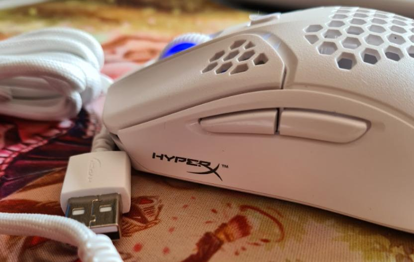
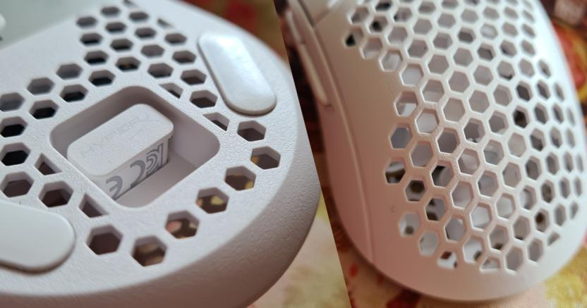

Hoy les presentaremos una review de experiencia respecto a la versión inalámbrica de un favorito y conocido por muchas personas, el Pulsefire Haste Wireless White de HyperX. Ya habíamos probado el 2021 su versión cableada y la verdad es que hemos encontrado que la adaptación es más que buena, te contaremos aquí los motivos.
Un mouse que brilla por su cuenta a pesar de no tener el RGB más llamativo del mundo, pero que para su peso de cerca de 62 gramos justificamos como más que suficiente. Tenemos un periférico óptimo para el día a día laboral, crear y editar contenidos, así como claro está: jugar. Con shooters como Overwatch 2 funciona más que bien, al igual que otros tales como VALORANT o una casual partida de League of Legends. Se queda atrás simplemente en juegos como World of Warcraft donde más botones son requeridos si quieres experimentar algo competitivo o un tipo de juego más hardcore, pero para una instancia casual en un juego así... todo va a estar bien.
Si bien es básicamente el mismo mouse que su versión cableada, tiene una sensación más balanceada en lo que respecta al peso, así como su porosidad que se siente muy grata al tacto, algo que HyperX suele entregar super bien en lo que respecta al balance de sus productos. Da la sensación de que en el caso de éste modelo, se siente mucho más balanceado por el espacio que tiene para guardar el receptor inalámbrico.

En temas de un dispositivo inalámbrico, puede cumplir más que bien su función en un computador de tarro al que enchufas el receptor USB en la parte inferior y te olvidas de ello,
pero a la par en un notebook funciona igual de bien, aunque en tal tipo de computador sería mucho mejor contar con algo Bluetooth.
Pero la funcionalidad sin cableado la verdad resalta en builds que tienen que hacer arte con la organización de cables, por lo que un dispositivo así te quita un cable de los
problemas del día a día, resulta que dice durar 100 horas de batería y la verdad es que cumple super cerca de esa suma según pudimos comprobar, lo llevamos probando
cerca de un mes y no lo hemos cargado en más de dos ocasiones (intercalando su uso con la versión cableada para comparar de forma óptima).
Un punto sumamente positivo es que tiene el grado de protección IP55 que básicamente te asegura resiste al polvo (esencial para estos productos)
y si se te derrama un vaso de agua por accidente vas a poder salvarle la vida antes de que sea tarde.
Lo que de hecho nos pasó en el proceso de la review y afortunadamente podemos decir que sobrevivió para comprobarlo.
Vale decir también que su sensor sigue siendo el mismo que la versión cableada, por lo que el PixArt PAW3335 te permitirá llegar a 16.000dpi
con un traqueo de movimiento de 450IPS (pulgadas por segundo).